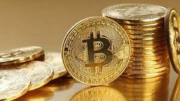
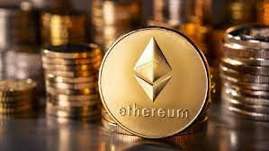
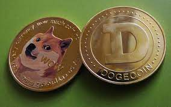
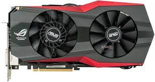

Artikel ini membahas mengenai Fenomena Trading, Mata Uang Kripto dan NFT seperti pengertian dan jenis-jenisnya, serta hubungan Trading, Mata Uang Kripto dan NFT dengan kemiskinan.
Fenomena trading mata uang kripto seperti Bitcoin dan Ethereum (NFT) yang sedang marak terjadi belakangan ini memang menimbulkan banyak pertanyaan masyarakat. Banyak orang dari muda sampai tua mulai trading “Cryptocurrency”, karena dikatakan dapat menghasilkan uang dengan mudah Tetapi apa itu sebenarnya trading, mata uang kripto & NFT? Bagaimana cara kerjanya? dan apakah sudah dilegalkan oleh pemerintah?
Apa itu trading, cryptocurrency & non fungible token?
Trading berasal dari bahasa Inggris trade yang artinya bertukar, artinya seseorang akan menitipkan/memodalkan suatu perusahaan, yang akan dikelola, baik itu barang dengan jasa. Aktivitas trading sendiri sudah lama dilakukan contohnya trading saham. Semakin banyak jumlah orang yang membeli (menaruh modal) saham perusahaan, maka harga saham perusahaan tersebut juga akan naik. Jika harga saham naik dua kali lipat, maka saham perusahaan yang kita punya juga akan naik 2 kali lipat, yang jika dijual harganya akan dua kali lipat saat kita beli, dan jika harga saham turun maka harga saham perusahaan akan turun. Namun, tidak semua jenis trading dianggap aman dan dilegalkan oleh pemerintah, beberapa mata uang kripto sudah dilegalkan oleh pemerintah namun masih banyak yang belum dilegalkan.
Kripto atau yang lebih dikenal dengan nama cryptocurrency merupakan mata uang virtual, dan berbeda dengan saham yang lebih konvensional, kripto lebih acak dan bebas, jenis kripto pun bervariasi. Mulai dari Bitcoin, Ethereum, Litecoin hingga kripto yang berasal dari candaan internet seperti Dogecoin. Cryptocurrency menggunakan uang digital (tidak nyata) yang digunakan untuk jual beli coin, berbeda dengan saham yang membeli langsung menggunakan uang asli dari bank. Dalam kripto, kita juga dapat “membuat” mata uang digital yang dijadikan bahan jual beli.
“Non Fungible Token (NFT)” merupakan sebuah kepemilikan aset digital yang dapat dijual ataupun dibeli melewati website-website NFT seperti OpenSea. Berbeda dengan Bitcoin, benda yang diperjual belikan berupa karya digital, yang dibeli menggunakan Ethereum (lot/lembaran dalam saham) Dalam NFT Kita dapat membuat ataupun trading produk gambar. Membuat NFT adalah jika kita menjual foto/gambar dengan harga yang kita tentukan, dan jika anda trading, anda dapat membeli karya orang lain dan menjualnya lagi dengan harga yang lebih tinggi. NFT ini marak belakangan ini berkat seseorang yang menjual foto pribadinya setiap hari dan mendapat banyak mendapat keuntungan.
Fenomena Trading di Masyarakat
Fenomena trading belakangan ini yang menjerat pidana para tokoh publik sangat mengejutkan. Banyak yang mengatakan kalau trading merupakan judi atau haram. Namun, terjadi sesat pikir di kalangan masyarakat karena yang mereka (tokoh publik) lakukan bukanlah trading, melainkan opsi biner, hal ini pun termasuk dalam sesat pikir Argumentum Ad Populum.
Opsi biner merupakan salah satu instrumen yang berbeda dengan trading pada umumnya. Jika trading merupakan kegiatan menukar aset (saham, kripto, forex), maka opsi biner merupakan kegiatan menebak naik turunnya sesuatu. Trader kemudian akan memilih aset yang akan ditebak (kripto, saham hingga komoditas), setelah memilih aset yang akan ditebak, trader kemudian mempertaruhkan sebagian modal untuk mendapat keuntungan.

Para trader yang benar menebak kemudian akan mendapatkan keuntungan sebesar 60 - 90 persen, namun jika tebakan mereka salah maka akan kehilangan modal yang mereka berikan. Kegiatan opsi biner inilah yang dinyatakan ilegal oleh pemerintah karena kurang lebih sama dengan judi lotre. Mereka yang menjadi afiliator (mengajak orang) mendapat keuntungan 70 persen dari kekalahan membernya. Hal inilah yang membuat kegiatan opsi biner ilegal di negara Indonesia.
Jenis Mata Uang Kripto
Bitcoin, Litecoin, Dogecoin dsb, memiliki prinsip yang mirip dengan saham, dimana kita membeli dan menjual. Namun, kita bisa membuat bitcoin sendiri dengan memecahkan kode - kode kriptografi dengan menggunakan komputer. Proses ini disebut sebagai mining, kegiatan ini membutuhkan alat-alat elektronik khusus seperti VGA dan CPU. Semakin banyak hasil koin yang diinginkan(target)maka semakin banyak alat alat tersebut yang dibutuhkan, juga semakin banyak jumlah yang dibutuhkan, maka tentu saja jumlah listrik yang dibutuhkan semakin banyak (memakan listrik).
Bitcoin
Bitcoin merupakan salah satu jenis mata uang kripto yang diciptakan oleh pihak anonim dengan nama Satoshi Nakamoto pada tahun 2009. Bitcoin ini merupakan mata uang kripto yang menguasai 68 persen pasar mata uang kripto. Beberapa perusahaan sudah melegalkan Bitcoin sebagai alat pembayaran. Contohnya pada tahun 2012, perusahaan perangkat lunak Microsoft memperbolehkan bitcoin sebagai alat pembayaran untuk platform mereka.
Ethereum
Ethereum merupakan mata uang kripto yang dirilis untuk platform Ether. Ethereum ini menjadi populer setelah menjadi alat pembayaran utama dalam membeli NFT di platform OpenSea. Dibandingkan dengan Bitcoin, Ethereum lebih populer untuk digunakan karena memiliki jangkauan pembayaran lebih luas.
Dogecoin
Sesuai namanya, mata uang kripto yang satu ini berasal dari candaan internet. Namun, siapa sangka? Seorang insinyur perusahaan perangkat lunak IBM Billy Markus benar-benar mewujudkannya. Fungsi dari Dogecoin ini sendiri tidak jauh berbeda dengan mata uang kripto lainnya, namun khusus untuk Dogecoin, majalah Forbes mengatakan bahwa Dogecoin bukan penyimpan nilai yang efektif.
Fenomena NFT di Masyarakat
NFT di Indonesia menjadi marak sejak awal tahun 2022 dikarenakan akun OpenSea “Ghozali Everyday” berhasil menjual swafoto dirinya dalam bentuk NFT dan meraup keuntungan hingga miliaran rupiah. Namun, tentu saja hasil miliaran rupiah tersebut tidak langsung didapatkan dalam waktu sehari atau dua hari. Diketahui, Ghozali memulai NFT sejak tahun 2017 dan baru mendapat keuntungan drastis di tahun 2022.

Pasca fenomena “Ghozali Everyday”, banyak masyarakat kemudian yang beramai - ramai mengunggah foto mereka di OpenSea. Namun, bukannya mendapat keuntungan, mereka malah mendapat kecaman dari menteri komunikasi dan informasi karena menjual hal yang bersifat pribadi seperti foto KTP hingga konten berbau pornografi.
Cryptocurrency dan lingkungan
Mata uang kripto memang terlihat menguntungkan. Apalagi perkembangan harganya yang cukup menyeramkan dalam beberapa dekade, hingga terbukanya era ke internet 3.0 yang diprediksi membutuhkan mata uang kripto. Namun, kita tidak bisa menutup mata terhadap masalah yang sudah pasti, yaitu masalah lingkungan.
Penggunaan graphics card dalam melakukan proses mining sangat memerlukan listrik. Seperti yang kita ketahui, pembangkit listrik di Indonesia masih didominasi oleh tenaga uap dan diesel yang membutuhkan batu bara. Asap dari pembakaran batubara sangat mencemari lingkungan. Jika terus dibiarkan, maka kondisi lingkungan akan semakin rusak karena permintaan listrik yang terus meningkat. Padahal, Indonesia sudah menargetkan untuk zero emission pada tahun 2060 dan akan dimulai pada tahun 2021 kemarin.
Jika kita melihat sedikit ke potensi sumber daya Indonesia, ada cara untuk menghasilkan listrik lebih efisien ,juga dapat digunakan untuk melakukan proses mining dari pemerintah, yaitu memanfaatkan energi termal. Cara ini sudah dilakukan oleh pemerintah El Salvador dengan menggunakan energi termal dari gunung berapi sebagai sumber daya untuk menghasilkan listrik selama proses mining. Indonesia sendiri merupakan negara dengan gunung api terbanyak di dunia, maka tidak ada salahnya untuk memanfaatkan 3 sampai 5 gunung api tersebut untuk menghasilkan listrik dengan memperhatikan faktor keselamatan. Namun dapat beresiko turunnya harga mata uang negara (inflasi) seperti yang dialami El Salvador.
NFT dan Kemiskinan
Seperti yang sudah dibahas di atas, Ghozali menjadi terkenal dan kaya mendadak berkat foto selfienya yang laris dijual di OpenSea. Namun, tentu saja butuh penantian selama 5 tahun untuk mendapatkan hal tersebut. Fenomena NFT ini menjadi awal yang baru untuk membuka jalan baru untuk menuntaskan masalah kemiskinan.
Pendidikan selama ini selalu dianggap sebagai tolak ukur seseorang. Banyak orang selalu melihat latar belakang pendidikan. Padahal, banyak sarjana yang menganggur seperti yang dicatat oleh Badan Pusat Statistik pada Februari 2021. Fenomena NFT ini kemudian membuka gerbang baru terhadap sesuatu yang dibutuhkan masyarakat di era digital, yaitu kreativitas.
Internet dan sosial media merupakan tempat yang mencakup orang-orang dari seluruh dunia. Mereka yang punya karya bisa mengunggah di internet sehingga tidak peduli latar belakang pendidikannya, semua orang bisa sukses dengan hanya bermodalkan kreativitas. Selaras dengan konsep pendidikan abad 21 yang menekankan kepada critical thinking, kreativitas, kolaborasi dan komunikasi.
Namun bukan berarti cryptocurrency selalu menjadi hasil positif, tidak sedikit jumlah anak masih bau kencur/dibawah umur yang terbuai dengan kripto. Kebanyakan kasus mereka mengambil uang orang tua/uang sekolah untuk investasi di jenis kripto yang tidak jelas,dan kehilangan uang nya. Biasanya mereka invest karena dibujuk teman atau medsos. Hal ini terjadi karena kurang nya pengalaman dan informasi,kripto memang menguntungkan jika memiliki pengetahuan dan pengalaman trading.
Kesimpulan
Trading, mata uang kripto dan NFT merupakan hal baru saat ini yang diprediksi akan menjadi lumrah di masa depan. Namun, sesuatu yang baru masih belum pasti dan membutuhkan pembelajaran untuk memahaminya, bukan hanya dari desas desus orang saja. Untuk menjadi melek dengan teknologi, kita harus mengerti hal tersebut lebih dulu, bukan hanya semata - mata tau saja.
Akhir Kata
Demikianlah artikel kami mengenai dunia mata uang kripto. Mata uang Kripto merupakan dunia yang sangat menarik dan memiliki banyak keuntungan dan juga kerugiannya. Masa depan mata uang kripto sekarang terlihat akan semakin terkenal dan terus membesar. Semoga artikel ini dapat membantu anda untuk lebih mengetahui mengenai dunia mata uang kripto.
Penyusun Teks
- Lionel Hans Fernando / 15
- Lucas Amadeus Sebastian Incataurean / 17
- Nicholas Keenan Setyawan / 22
Penyusun Web
- Azrael Jorithian Djayaprawira / 03
- Wilbert Lee / 30
Referensi
- https://inet.detik.com/cyberlife/d-5944005/mengenal-dan-mempelajari-apa-itu-trading
- https://katadata.co.id/desysetyowati/digital/619dfd47cfe69/mui-sebut-kripto-haram-bappebti-terbitkan-regulasi-baru
- https://opensea.io/
- https://money.kompas.com/read/2022/02/25/085500926/apa-itu-binary-option-yang-membuat-crazy-rich-indra-kenz-terancam-20-tahun?page=all
- https://id.wikipedia.org/wiki/Argumentum_ad_populum
- https://glints.com/id/lowongan/cryptocurrency-adalah/
- https://www.inews.id/finance/keuangan/jenis-dan-kategori-cryptocurrency-terlengkap-yang-perlu-anda-tahu-agar-untung-maksimal
- https://pintu.co.id/academy/post/apa-itu-ethereum
- https://beritadiy.pikiran-rakyat.com/citizen/pr-703482561/apa-itu-dogecoin-ini-pengertian-fungsi-hingga-cara-untuk-mendapatkannya
- https://www.suara.com/entertainment/2022/01/19/103208/profil-ghozali-everyday-mendadak-kaya-gara-gara-jual-foto-selfie?page=2
- https://www.suara.com/news/2022/01/16/141802/ramai-foto-open-bo-tersebar-di-nft-usai-ghozali-everyday-viral-kominfo-jangan-jual-konten-melanggar-hukum
- https://migas.esdm.go.id/post/read/cop-ke-26-menteri-esdm-sampaikan-komitmen-indonesia-capai-net-zero-emission
- https://databoks.katadata.co.id/datapublish/2020/09/28/sebaran-pembangkit-listrik-di-indonesia
- http://www.obengplus.com/articles/6290/1/Computer-game-itu-boros-listrik.html
- https://www.cnbcindonesia.com/tech/20211005114635-37-281516/unik-negara-ini-tambang-bitcoin-pakai-energi-gunung-berapi
- https://magma.esdm.go.id/v1/edukasi/tipe-gunung-api-di-indonesia-a-b-dan-c
- https://databoks.katadata.co.id/datapublish/2021/05/31/bps-sarjana-yang-menganggur-hampir-1-juta-orang-pada-februari-2021
Tanggapan dan masukan: https://forms.gle/htEZ9PzxL4xB1KBn9